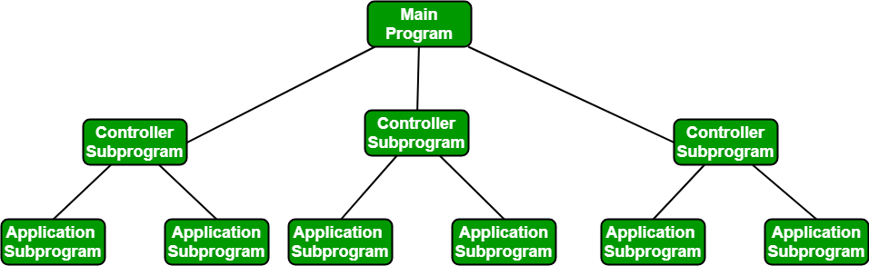
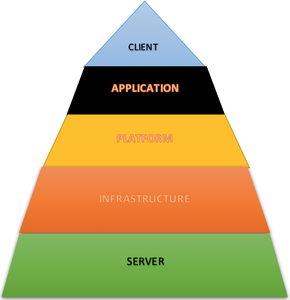
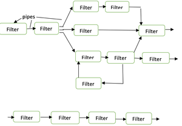

5.4 Architectural Design / Software Architecture
Architectural design is the specification of the major components of a system, their responsibilities, properties, interfaces, and the relationships and interactions between them. IEEE defines architectural design as "the process of defining a collection of hardware and software components and their interfaces to establish the framework for the development of a computer system."
At the architectural level, the overall structure is chosen but internal details of major components are ignored — modules are treated as black boxes. Designers focus on coupling and cohesion between modules (see §5.10).

Elements of software architecture
- Components: A set of elements (e.g., database, computational modules) that perform functions required by the system.
- Connectors: Mechanisms that coordinate, communicate, and cooperate between components.
- Constraints: Rules defining how components can be integrated to form the complete system.
- Semantic models: Models that help the designer understand overall system properties such as performance and reliability.
Issues in architectural design
- Gross decomposition: Breaking the system into major components or subsystems.
- Functional allocation: Assigning each required function to the appropriate component.
- Component interfaces: Defining how components communicate — APIs, message formats, protocols.
- Non-functional properties: Scaling, performance, resource consumption, reliability of each component.
- Communication and interaction: How components exchange data and control signals.
Common architectural styles
1. Layered (N-tier) architecture

- Components are separated into layers of subtasks, arranged one above another; each layer performs a well-defined set of operations.
- Each layer is independent — code in one layer can be modified without affecting others.
- Typical four layers: presentation (user interface), business (business logic), application (communication medium), and data (database/storage).
- Most commonly used pattern for the majority of software systems.
2. Object-oriented architecture

- Components of the system encapsulate data and the operations applied to manipulate that data.
- Coordination and communication between components is established via message passing.
- Links to object-oriented design in §5.15.
3. Other architectural styles (exam awareness)
- Client-server: Clients request services; servers provide them — common in distributed systems.
- Pipe-and-filter: Data flows through a sequence of processing filters — common in compilers and data pipelines.
- Event-driven: Components react to events — common in GUI and real-time systems.
- Microservices: System decomposed into small, independently deployable services communicating over a network.
Architecture vs detailed design
- Architectural design adds important structural details ignored during interface design but still hides internal module implementation.
- Detailed design of individual modules is deferred until the architectural structure is agreed (see §5.5).
- The architecture provides conceptual integrity — a coherent overall structure that all developers follow.
Q: What is architectural design? List issues addressed at this level. Explain one architectural style.
Model answer points:
- Define architectural design: major components, responsibilities, interfaces, interactions.
- Issues: decomposition, functional allocation, interfaces, non-functional properties, communication.
- Explain layered architecture: 4 layers, independence, most common pattern.
- Elements: components, connectors, constraints, semantic models.
- Modules treated as black boxes; coupling/cohesion focus.